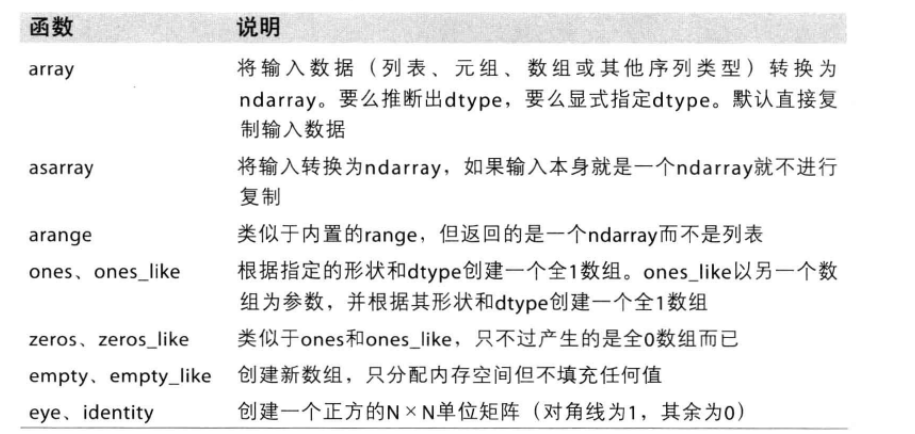
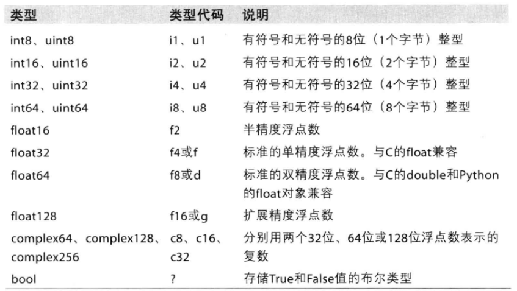
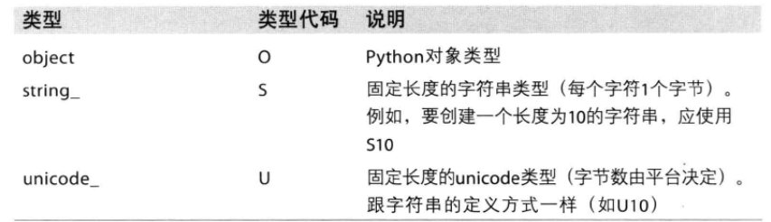
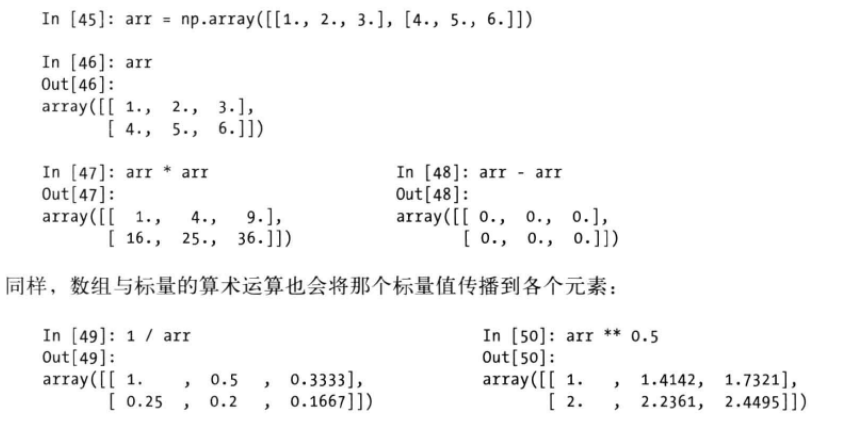

利用python进行数据分析
0 条评论之前看了《Python网络数据采集》，自己也实践了很多数据爬虫，发现数据抓取不是主要的，分析数据的价值才是最主要的，因此阅读这本《利用python进行数据分析》，以下这篇文章都是这篇文章的笔记，也方便自己细读和后续查找资料，我发现，很多情况下，我都会翻阅之前做的笔记。
对于大部分数据分析应用而言，最常关注的功能主要集中在
- 用于数据整理和清理，自己构造和过滤，转换等快速的矢量化数组运算
- 常用的数组算法，如排序，唯一化，集合运算
- 高校的描述统计和数据聚合摘要运算
- 用于异构数据集的合并、连接运算的数据对齐和关系型数据运算
- 将条件逻辑表述为数组表达式
- 数组的分组运算（聚合，转换，函数应用）
以下，我们聚焦上述这些点，学习一些工具的使用
NumPy基础：数组和矢量计算
NumPy Numerical Python是高性能科学计算和数据分析的基础跑，是其他高级工具的构建基础，主要功能
- ndarray，一个具有矢量算数运算和复杂广播能力的快速且节省空间的多维数组
- 无需编写循环，用于对整组数据进行快速运算的标准函数
- 用于读写磁盘数据的工具以及用于操作内存映射文件的工具
- 线性代数，随机数生成以及傅里叶变换功能
NumPy的ndarray：一种多维数组对象
ndarray是一个通用的同构数据多维容器，所有元素是相同类型的，每个数组都有shape(各维度大小的元素)和dtype(说明数组数据类型的对象)
创建方法：

ndarray数据类型


可通过在创建初始化或者使用astype进行格式转换如：
np.array([‘1’,’2’,’3’],dtype=np.string)
数组和标量之间的运算
numpy中的数组很重要，因为可以编写循环即可对数据执行批量运算，这通常叫做矢量化，如

- 索引和切片
一维数组切片:
与python列表的区别：数组切片是原始数组的视图，视图上的任何修改都会直接反应到源数组上，这意味着数据不会被复制，因为numpy的设计目的是处理大数据，因此，如果数据复制来复制去的话会产生何等的性能和内存难问题